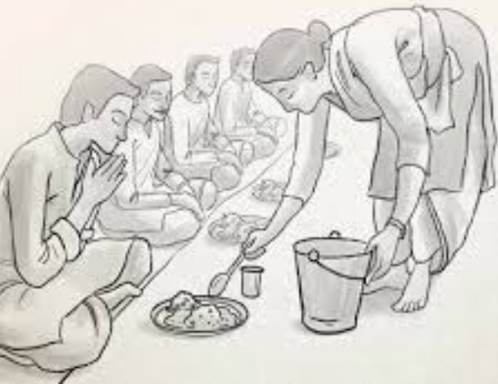

Annadanam: A Sacred Offering of Nourishment
Annadanam, the act of offering food, transcends mere charity—it is a sacred ritual rooted in the ancient Vedic tradition. In a world where hunger persists, Annadanam represents compassion in its purest form, addressing not only physical hunger but also bringing hope and dignity to those in need.
At SriVidya Charities, Annadanam is at the heart of our mission. Guided by the teachings of revered spiritual leaders such as Sri Paramaachaarya, Vallimalai Swamigal, and Bhagwan Sri Satya Sai Baba, we embrace food as a divine gift. Offering a meal to the needy is more than just a humanitarian act—it is an offering to the Almighty, embodying the essence of service and love.
Through our Annadanam programs, we strive to nourish both body and soul, fostering a sense of community and connectedness. Join us in this sacred endeavor to uplift those in need, transforming lives one meal at a time.
Why Annadanam?
Holistic Nourishment: Annadhaanam nourishes the body, mind, and soul. It fosters a sense of community and compassion.

A Sacred Duty: Feeding the hungry is seen as an offering to God according to our scriptures.
Uplifting Lives: A single meal can provide hope to those in desperate situations, giving them the strength to face tomorrow.
The Transformative Power of Annadanam
At Sri Vidya Charities, we have seen first-hand how a meal can change lives. Every plate served offers hope and sustenance to those in need. With the blessings of our Gurus, we continue to expand our reach, providing meals to thousands across different regions. Our goal is to spread the joy and spiritual significance of Annadhaanam to as many as possible.
Get Involved: Your Support Matters
to help us serve more people, or to join our compassionate team.